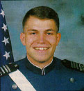

- Parents Group
- Misc
- Rando Fund
- USAFA
RANDO
FUND  |
Cadet First Class Dennis P. Rando lost his life in a flight training accident on September 30, 1996. He is the son of Paul and Toni Rando of East Bridgewater, MA, and the brother of Denise Rando. Paul and Toni were members of the AF Academy Cadet Parents' Association of Eastern Massachusetts. Dennis' Instructor Pilot, Capt. Clay Smith, lost his life in the accident as well. Tragically, two other cadets and their Air Force flight instructors also lost their lives in separate flight trainer accidents at the Academy in 1995 - Cadet Mark Dostal and his Instructor Pilot, Capt. Dan Fischer and in 1997 - Cadet Pace Weber and his Instructor Pilot, Capt. Glenn Comeaux. (http://www.falconpride.com/t3/) Dennis
was an admirable and well-liked Cadet. Those who knew him were very
impressed by his friendliness, willingness to help others, generosity,
and his compassion. Dennis is described by many as "the epitome
of a cadet." His passion was to fly. The Fund's primary purpose is to help finance travel so that a group of about six cadets can attend the funeral services of a fellow cadet. The fund continually maintains a $10,000 reserve of its total assets for this purpose. Enabling the cadets to participate in the funeral service of a fellow cadet accomplishes two things. It helps cadets during an emotional time to say a final good-bye to their very close friend and it helps support the family involved when they see and meet a contingent of cadets who were closest to their son or daughter. The cadets also serve as the representatives of all other cadets and cadet families at the hometown services. Cadets are not asked to repay these funds. The funds are a gift made possible by the generous donations of people like you. All funds beyond the reserve are earmarked for humanitarian purposes such as enabling cadets of limited financial means to be able to travel home to attend the funeral services for a family member, close relative or close friend; or, to visit a very ill or seriously injured family member, close relative or friend based on the recommendations of a cadet's AOC, the Cadet Chaplain's Office or Commandant's Office. Cadet eligibility regarding necessity of travel, as well as determining the cadet's financial need is the responsibility of the Chaplain's Office. Not even the President of the Rando Fund is involved in that process. It has always been the opinion of the Fund's leadership that those decisions are best left to those most closely involved with the cadets and have the expertise necessary to determine a cadet's level of personal, emotional and financial need. Based on those recommendations, the Fund will subsidize the cost of the travel. The cadet and their family are not required to reimburse the fund. Again, these funds are a gift made possible by your donations.
The Fund supports any cadet in need, not just the cadets whose families or Parents' Associations have made contributions. The Rando Fund has no affiliation with any other fund raising groups or organizations and has no other missions other than to raise funds on behalf of cadets for the purposes stated above. 100% of every donation received goes into the Fund. The Fund has no paid staff nor does it have any expenses related to its operation. The cost of all expenses is donated.
Thank you, Jack BernazzaniPresident and Trustee Dennis P. Rando Cadet Humanitarian Fund
Donations can be sent to Jack Bernazzani at: Jack Bernazzani Please make checks payable to the "Rando Fund" |